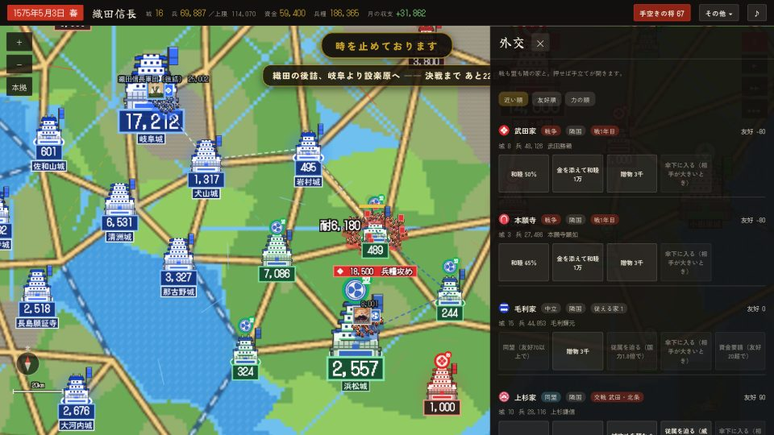

天下統一 早く
小さな家は強い隣国との同盟で守りを減らし、開城交渉で城を増やしてから、従属で残る家をまとめます。
銭・兵糧・実兵を切らさず、〈天下の残り〉に出る条件を整えるのが統一を早める道です。

小さな家の序盤
銭と米を整え、兵を集めます。強い隣国へ贈物を送り友好70を目指して同盟し、複数の家と同時に戦う状況を避けます。弱い隣国や交渉できる城へ力を集中します。
生き残れないほど押されるなら、自家が強国へ臣従して領地を守る道もあります。これは相手を自家へ従属させる操作とは逆です。主家の城は奪えません。
長篠の小勢力では、自城五・兵一万、または自城二・兵三千で三年臣従し、相互友好70と礼金二万を整えると独立の安堵を交渉できます。
開城交渉で兵を温存する
相手の城を開き〈調略で開城を誘う〉が出る城で礼金と見込みを確認します。空いている知略の高い将、相手城主の忠義、両家の兵力差などが成否に響きます。
成功すると所領安堵を条件に開城します。失敗しても銭を使い、同じ城との再交渉は九十日あけます。別途、家全体の交渉間隔もあるので、銭を使い切らず表示された見込みで選びます。
交渉が届かない城や抗戦する家は、近くの城から兵糧を用意して出陣します。城を一つずつ増やし、内政と補給を追いつかせます。
従属で天下の仕上げを早める
〈天下の残り〉で家ごとの降し方と渡海の道を読みます。条件が整った家へ〈従属を求める〉を送り、実兵の威を保って返書を待ちます。
自家の城と実兵が明らかに上回ると、残る家から従属の申し出が来ます。〈従属を受け入れる〉と、その家の城が統一の数に加わります。全城を武力で落とす必要はありません。
海を渡る相手には札の出立の城と行き先を確認し、米を蓄えます。出立の城に港を築くと船足が上がります。地図の「あと〇家・〇城」で残りを追います。
よくある問い
小さな家でも全城を攻め落とす必要がある？
全城を武力で落とす必要はありません。同盟で守りを固め、開城交渉で城を増やし、残る家への従属交渉と申し出の受け入れを使います。天下の残りで条件を確認します。